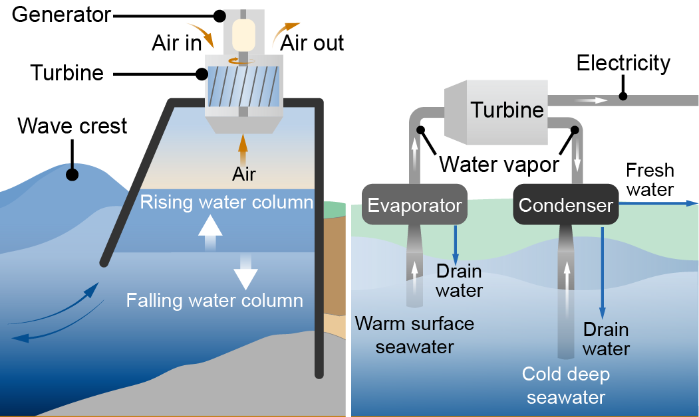

е начин да се искористи снагата на океанот за производство на електрична енергија. Користи различни технологии како турбини на морското дно за искористување на морските течења, системи за конверзија на топлината на морската вода, и уреди за искористување на енергијата од брановите и приливите. Овие технологии се развиваат за да бидат чист и одржлив извор на енергија што може да помогне во снабдувањето со електрична енергија.
